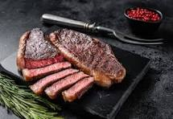

Steak Recipe

Steak is a premium cut of beef, renowned for its rich flavor and tender texture. Derived from various parts of the cow, such as the rib, loin, or round, each cut offers a unique culinary experience. Ribeye, known for its marbling and juiciness, delivers a robust taste, while the tenderloin, or filet mignon, is prized for its tenderness. The New York strip offers a balance of tenderness and flavor, making it a favorite among steak enthusiasts.
ingredients
- Steak (ribeye, tenderloin, New York strip, or your preferred cut)
- Salt (preferably kosher salt)
- Black pepper
- Olive oil or vegetable oil
Steps
- Remove the steak from the refrigerator about 30-60 minutes before cooking to allow it to come to room temperature. This ensures even cooking.
- Generously season both sides of the steak with kosher salt and freshly ground black pepper. If desired, you can use a steak seasoning or spice rub.
- Preheat a cast-iron skillet or heavy-bottomed pan over high heat until its very hot. You can also use a grill if preferred.
- Add a small amount of high-smoke point oil (such as vegetable or olive oil) to the pan and heat until shimmering.